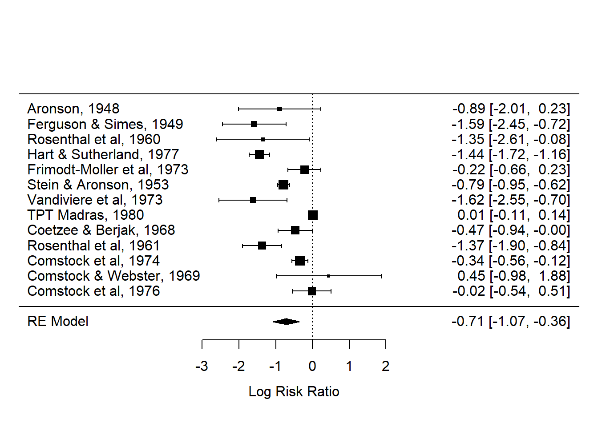
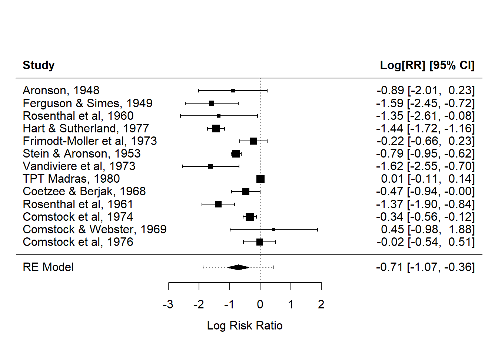
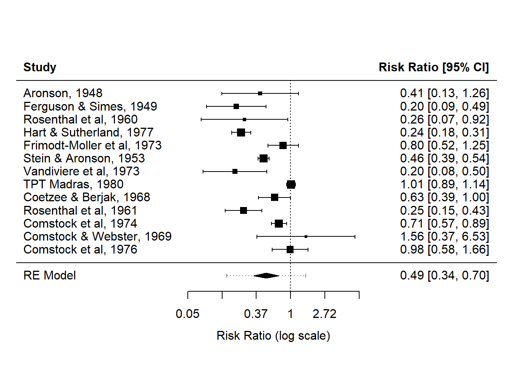
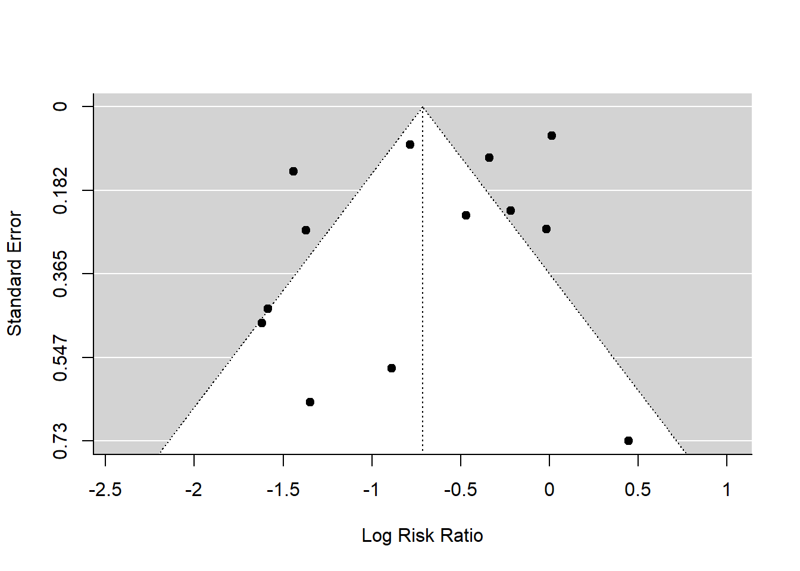
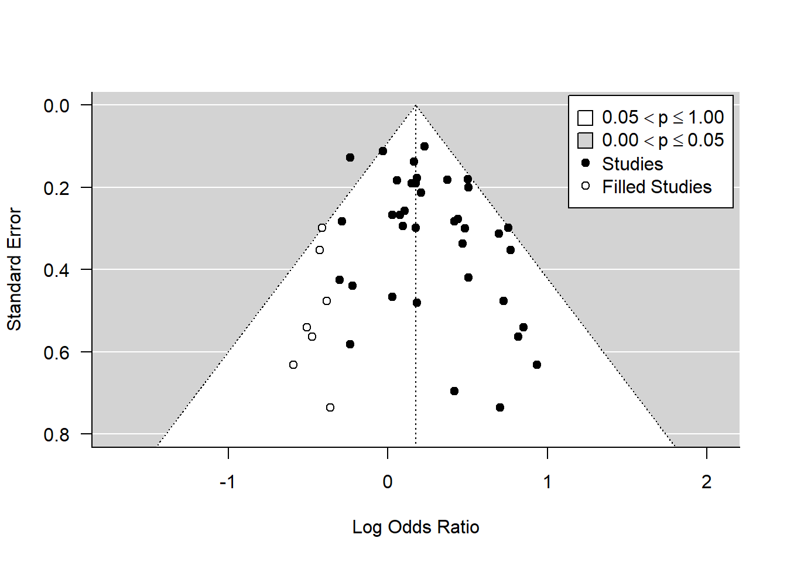

4.2 metafor
Code by the author of the package
library(metafor)
dat.bcg
#> trial author year tpos tneg cpos cneg ablat alloc
#> 1 1 Aronson 1948 4 119 11 128 44 random
#> 2 2 Ferguson & Simes 1949 6 300 29 274 55 random
#> 3 3 Rosenthal et al 1960 3 228 11 209 42 random
#> 4 4 Hart & Sutherland 1977 62 13536 248 12619 52 random
#> 5 5 Frimodt-Moller et al 1973 33 5036 47 5761 13 alternate
#> 6 6 Stein & Aronson 1953 180 1361 372 1079 44 alternate
#> 7 7 Vandiviere et al 1973 8 2537 10 619 19 random
#> 8 8 TPT Madras 1980 505 87886 499 87892 13 random
#> 9 9 Coetzee & Berjak 1968 29 7470 45 7232 27 random
#> 10 10 Rosenthal et al 1961 17 1699 65 1600 42 systematic
#> 11 11 Comstock et al 1974 186 50448 141 27197 18 systematic
#> 12 12 Comstock & Webster 1969 5 2493 3 2338 33 systematic
#> 13 13 Comstock et al 1976 27 16886 29 17825 33 systematic4.2.1 Log Risk
# calculate log risk ratios and corresponding sampling variances
# note: slab for adding 'study labels' to the dataset
dat <- escalc(measure="RR", ai=tpos, bi=tneg,
ci=cpos, di=cneg,
slab=paste(author, ", ", year, sep=""), data=dat.bcg)
dat
#>
#> trial author year tpos tneg cpos cneg ablat alloc
#> 1 1 Aronson 1948 4 119 11 128 44 random
#> 2 2 Ferguson & Simes 1949 6 300 29 274 55 random
#> 3 3 Rosenthal et al 1960 3 228 11 209 42 random
#> 4 4 Hart & Sutherland 1977 62 13536 248 12619 52 random
#> 5 5 Frimodt-Moller et al 1973 33 5036 47 5761 13 alternate
#> 6 6 Stein & Aronson 1953 180 1361 372 1079 44 alternate
#> 7 7 Vandiviere et al 1973 8 2537 10 619 19 random
#> 8 8 TPT Madras 1980 505 87886 499 87892 13 random
#> 9 9 Coetzee & Berjak 1968 29 7470 45 7232 27 random
#> 10 10 Rosenthal et al 1961 17 1699 65 1600 42 systematic
#> 11 11 Comstock et al 1974 186 50448 141 27197 18 systematic
#> 12 12 Comstock & Webster 1969 5 2493 3 2338 33 systematic
#> 13 13 Comstock et al 1976 27 16886 29 17825 33 systematic
#> yi vi
#> 1 -0.8893 0.3256
#> 2 -1.5854 0.1946
#> 3 -1.3481 0.4154
#> 4 -1.4416 0.0200
#> 5 -0.2175 0.0512
#> 6 -0.7861 0.0069
#> 7 -1.6209 0.2230
#> 8 0.0120 0.0040
#> 9 -0.4694 0.0564
#> 10 -1.3713 0.0730
#> 11 -0.3394 0.0124
#> 12 0.4459 0.5325
#> 13 -0.0173 0.0714
# random-effects model (using log risk ratios and variances as input)
res <- rma(yi, vi, data=dat)
res
#>
#> Random-Effects Model (k = 13; tau^2 estimator: REML)
#>
#> tau^2 (estimated amount of total heterogeneity): 0.3132 (SE = 0.1664)
#> tau (square root of estimated tau^2 value): 0.5597
#> I^2 (total heterogeneity / total variability): 92.22%
#> H^2 (total variability / sampling variability): 12.86
#>
#> Test for Heterogeneity:
#> Q(df = 12) = 152.2330, p-val < .0001
#>
#> Model Results:
#>
#> estimate se zval pval ci.lb ci.ub
#> -0.7145 0.1798 -3.9744 <.0001 -1.0669 -0.3622 ***
#>
#> ---
#> Signif. codes: 0 '***' 0.001 '**' 0.01 '*' 0.05 '.' 0.1 ' ' 1
# predicted pooled risk ratio and corresponding CI/PI
predict(res, transf=exp, digits=2)
#>
#> pred ci.lb ci.ub pi.lb pi.ub
#> 0.49 0.34 0.70 0.15 1.55
# forest plot
forest(res)
forest(res, addpred=TRUE, header=TRUE)
print(forest(res, addpred=TRUE, header=TRUE))
#> $xlim
#> [1] -8.00 7.26
#>
#> $alim
#> [1] -3 2
#>
#> $at
#> [1] -3 -2 -1 0 1 2
#>
#> $ylim
#> [1] -1.5 16.0
#>
#> $rows
#> [1] 1 2 3 4 5 6 7 8 9 10 11 12 13
#>
#> $cex
#> [1] 1
#>
#> $cex.lab
#> [1] 1
#>
#> $cex.axis
#> [1] 1
#>
#> $ilab.xpos
#> NULL
#>
#> $ilab.pos
#> NULL
#>
#> $textpos
#> [1] -8.00 7.26
forest(res, addpred=TRUE, header=TRUE, xlim=c(-8,6))
forest(res, addpred=TRUE, header=TRUE, xlim=c(-8,6), atransf=exp)
forest(res, addpred=TRUE, header=TRUE, xlim=c(-8,5), atransf=exp, at=log(c(.05, .25, 1, 4)))
# funnel plot
funnel(res)
funnel(res, ylim=c(0,.8), las=1)funnel(res, ylim=c(0,.8), las=1, digits=list(1L,1))
# calculate log odds ratios and corresponding sampling variances for
# the meta-analysis on the effectiveness of vaccines against cholera
dat <- escalc(measure="OR", ai=ai, n1i=n1i,
ci=ci, n2i=n2i, data=dat.graves2010)
dat
#>
#> study ai n1i ci n2i yi vi
#> 1 Oseasohn 1965 8 6956 33 7103 -1.3997 0.1556
#> 2 McCormack 1969 44 29939 35 9923 -0.8775 0.0514
#> 3 Mosley 1970-i 32 11491 13 3810 -0.2038 0.1085
#> 4 Mosley 1970-ii 2 11435 12 3810 -2.8938 0.5837
#> 5 Taneja 1965 73 40326 27 10789 -0.3245 0.0509
#> 6 PCC 1973b 72 82220 93 40620 -0.9625 0.0247
#> 7 PCC 1973a-i 38 44500 23 11050 -0.8922 0.0699
#> 8 PCC 1973a-ii 33 45750 22 11050 -1.0166 0.0759
#> 9 PCC 1973a-iii 36 44450 23 11050 -0.9452 0.0714
#> 10 PCC 1973a-iv 26 44700 22 11050 -1.2319 0.0840
#> 11 Azurin 1965-i 110 145500 52 48934 -0.3408 0.0283
#> 12 Azurin 1965-ii 92 148100 52 48933 -0.5373 0.0301
#> 13 Azurin 1965-iii 71 143600 52 48933 -0.7657 0.0333
#> 14 Pal 1980 13 101096 33 101030 -0.9324 0.1072
#> 15 PCC 1968 54 268700 41 90900 -0.8087 0.0429
#> 16 Saroso 1978-i 18 156300 19 79250 -0.7334 0.1082
#> 17 Saroso 1978-ii 10 155600 18 79250 -1.2626 0.1556
# random-effects model
res <- rma(yi, vi, data=dat)
predict(res, transf=exp, digits=2)
#>
#> pred ci.lb ci.ub pi.lb pi.ub
#> 0.45 0.38 0.53 0.29 0.70
# contour-enhanced funnel plot
funnel(dat$yi, dat$vi, yaxis="seinv",
xlim=c(-3,2), ylim=c(.00001,8), xaxs="i", yaxs="i", las=1,
level=c(.10, .05, .01), shade=c("white", "gray55", "gray75"),
legend=TRUE, back="gray90", hlines=NULL, ylab="Precision (1/se)")
# meta-analysis on the risk of lung cancer in women exposed to environmental
# tobacco smoke (ETS) from their smoking spouse (yi are log odds ratios)
res <- rma(yi, vi, data=dat.hackshaw1998)
res
#>
#> Random-Effects Model (k = 37; tau^2 estimator: REML)
#>
#> tau^2 (estimated amount of total heterogeneity): 0.0224 (SE = 0.0178)
#> tau (square root of estimated tau^2 value): 0.1497
#> I^2 (total heterogeneity / total variability): 29.57%
#> H^2 (total variability / sampling variability): 1.42
#>
#> Test for Heterogeneity:
#> Q(df = 36) = 47.4979, p-val = 0.0952
#>
#> Model Results:
#>
#> estimate se zval pval ci.lb ci.ub
#> 0.2189 0.0494 4.4313 <.0001 0.1221 0.3157 ***
#>
#> ---
#> Signif. codes: 0 '***' 0.001 '**' 0.01 '*' 0.05 '.' 0.1 ' ' 1
predict(res, transf=exp, digits=2)
#>
#> pred ci.lb ci.ub pi.lb pi.ub
#> 1.24 1.13 1.37 0.91 1.70
funnel(res, ylim=c(0,.8), las=1, digits=list(1L,1))
# trim and fill method
funnel(trimfill(res), las=1, ylim=c(0,.8), digits=list(1L,1), legend=TRUE)
4.2.2 Correlation
# and job performance (using r-to-z transformed correlation for the analysis)
dat <- escalc(measure="ZCOR", ri=ri, ni=ni, data=dat.mcdaniel1994)
res <- rma(yi, vi, data=dat)
res
predict(res, transf=transf.ztor)
# outlier/influence diagnostics
par(mar=c(5,6,4,2))
plot(influence(res), cex=0.8, las=1)
# Baujat plot (back to the BCG meta-analysis)
dat <- escalc(measure="RR", ai=tpos, bi=tneg, ci=cpos, di=cneg,
slab=paste(author, ", ", year, sep=""), data=dat.bcg)
res <- rma(yi, vi, data=dat)
baujat(res, bty="l", xlim=c(0,2), ylim=c(0,.25))
# cumulative meta-analyis
sav <- cumul(res, order=dat$year)
sav
forest(sav, xlim=c(-5,2.5), header=TRUE)
# back to the meta-analysis on the risk of lung cancer due to ETS
res <- rma(yi, vi, data=dat.hackshaw1998)
# radial plot
radial(res)
# meta-analysis on the effectiveness of wrist acupuncture point P6 stimulation
# for preventing postoperative nausea
res <- rma(measure="RR", ai=ai, n1i=n1i, ci=ci, n2i=n2i, data=dat.lee2004)
res
predict(res, transf=exp, digits=2)
# L'Abbé plot
labbe(res, transf=exp, bty="l")
# meta-analysis based on 20 hypothetical trials to examine the effectiveness
# of a particular treatment/medication
dat <- escalc(measure="OR", ai=xTi, n1i=nTi, ci=xCi, n2i=nCi,
add=1/2, to="all", data=dat.viechtbauer2021)
dat
res <- rma(yi, vi, data=dat, method="FE")
res
# GOSH plot
sav <- gosh(res, subset=20000)
plot(sav, out=6, xlim=c(-0.25,1.25), breaks=100, hh=0.2)
# GOSH plot based on all possible subsets (takes a long time to create)
#sav <- gosh(res, subsets=10^7)
#plot(sav, cex=0.1, out=6, xlim=c(-0.25,1.25), breaks=c(200,100), hh=0.2, lwd=1)
# mixed-effects meta-regression model with absolute latitude and type of
# allocation as moderators/predictors (back to BCG dataset)
dat <- escalc(measure="RR", ai=tpos, bi=tneg, ci=cpos, di=cneg,
slab=paste(author, ", ", year, sep=""), data=dat.bcg)
res <- rma(yi, vi, mods = ~ ablat + alloc, data=dat)
res
############################################################################
# forest plots with subgroups
# fit random-effects model
res <- rma(yi, vi, data=dat)
# a little helper function to add Q-test, I^2, and tau^2 estimate info
mlabfun <- function(text, res) {
list(bquote(paste(.(text),
" (Q = ", .(formatC(res$QE, digits=2, format="f")),
", df = ", .(res$k - res$p),
", p ", .(metafor:::.pval(res$QEp, digits=2, showeq=TRUE, sep=" ")), "; ",
I^2, " = ", .(formatC(res$I2, digits=1, format="f")), "%, ",
tau^2, " = ", .(formatC(res$tau2, digits=2, format="f")), ")")))}
# set up forest plot (with 2x2 table counts added; the 'rows' argument is
# used to specify in which rows the outcomes will be plotted)
forest(res, xlim=c(-16, 4.6), at=log(c(0.05, 0.25, 1, 4)), atransf=exp,
ilab=cbind(dat$tpos, dat$tneg, dat$cpos, dat$cneg),
ilab.xpos=c(-9.5,-8,-6,-4.5), cex=0.90, ylim=c(-1, 27),
order=dat$alloc, rows=c(3:4,9:15,20:23),
mlab=mlabfun("RE Model for All Studies", res),
psize=1, header="Author(s) and Year")
# set font expansion factor (as in forest() above) and use a bold font
op <- par(cex=0.90, font=2)
# add additional column headings to the plot
text(c(-9.5,-8,-6,-4.5), 26, c("TB+", "TB-", "TB+", "TB-"))
text(c(-8.75,-5.25), 27, c("Vaccinated", "Control"))
# switch to bold italic font
par(font=4)
# add text for the subgroups
text(-16, c(24,16,5), pos=4, c("Systematic Allocation",
"Random Allocation",
"Alternate Allocation"))
# set par back to the original settings
par(op)
# fit random-effects model in the three subgroups
res.s <- rma(yi, vi, subset=(alloc=="systematic"), data=dat)
res.r <- rma(yi, vi, subset=(alloc=="random"), data=dat)
res.a <- rma(yi, vi, subset=(alloc=="alternate"), data=dat)
# add summary polygons for the three subgroups
addpoly(res.s, row=18.5, cex=0.90, atransf=exp, mlab=mlabfun("RE Model for Subgroup", res.s))
addpoly(res.r, row= 7.5, cex=0.90, atransf=exp, mlab=mlabfun("RE Model for Subgroup", res.r))
addpoly(res.a, row= 1.5, cex=0.90, atransf=exp, mlab=mlabfun("RE Model for Subgroup", res.a))
# fit meta-regression model to test for subgroup differences
res <- rma(yi, vi, mods = ~ alloc, data=dat)
# add text for the test of subgroup differences
text(-16, -1.8, pos=4, cex=0.90, bquote(paste("Test for Subgroup Differences: ",
Q[M], " = ", .(formatC(res$QM, digits=2, format="f")), ", df = ", .(res$p - 1),
", p = ", .(formatC(res$QMp, digits=2, format="f")))))
############################################################################
# mixed-effects meta-regression model with absolute latitude and type of
# allocation as moderators/predictors (back to BCG dataset)
dat <- escalc(measure="RR", ai=tpos, bi=tneg, ci=cpos, di=cneg, data=dat.bcg)
res <- rma(yi, vi, mods = ~ ablat, data=dat)
# draw plot
regplot(res, xlim=c(10,60), predlim=c(0,60), xlab="Absolute Latitude", refline=0,
atransf=exp, at=log(seq(0.2,2,by=0.2)), digits=1, las=1, bty="l",
label=c(4,7,12,13), offset=c(1.6,1), labsize=0.9)
############################################################################
# selection models
cols <- palette.colors(8, palette = "R4")
res <- rma(yi, vi, data=dat.hackshaw1998)
types <- c("beta", "halfnorm", "negexp", "logistic", "power", "negexppow", "stepfun")
sel <- list()
for (j in 1:length(types)) {
sel[[j]] <- selmodel(res, type=types[j], steps = if (types[j] == "stepfun") c(.025, .1, .2, .5, 1) else NA,
control=list(pval.min = if (types[j] %in% c("beta","negexppow")) 1e-4 else 0))
plot(sel[[j]], ylim=c(0,1), scale=j==1, lwd=3, col=cols[j], add=j>1, las=1, bty="l")
}
types <- c("beta function", "half normal function", "negative exponential function", "logistic function", "power function", "negative exponential power function", "step function")
ord <- c(2,5,4,3,6,7,1)
legend("topright", inset=0, legend=types[ord], lwd=3, col=cols[ord], bg="white", seg.len=3, box.col="white")
############################################################################
# reporter() function
dat <- escalc(measure="RR", ai=tpos, bi=tneg, ci=cpos, di=cneg,
slab=paste(author, ", ", year, sep=""), data=dat.bcg)
res <- rma(yi, vi, data=dat)
res
reporter(res)
reporter(res, format="pdf")
reporter(res, format="word")
# add an outlier
dat$yi[6] <- 2.5
res <- rma(yi, vi, data=dat)
reporter(res)
############################################################################